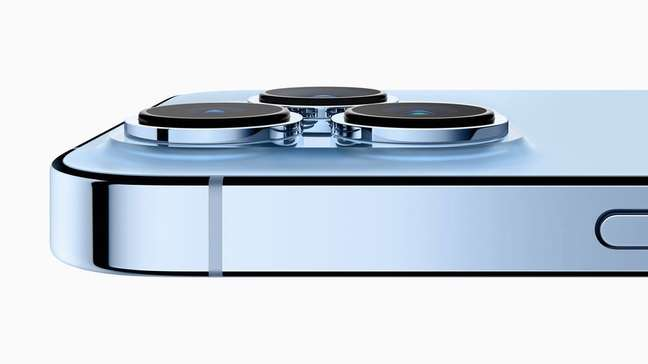

Apple tenta impulsionar estratégia no mundo dos games com o iPhone 13
Novo smartphone traz recursos para quem gosta de jogos eletrônicos; empresa tenta atrair usuários para o serviço Apple Arcade, mas preço é um grande obstáculo

Já faz algum tempo que games para celulares deixaram de ser o "jogo da cobrinha" para formarem uma indústria bilionária - em 2020, ela faturou US$ 80 bilhões no mundo, segundo a empresa de análise Newzoo. É uma disputa que envolve grandes estúdios (como a Blizzard), nomes tradicionais (como Sony, Microsoft e Nintendo), e gigantes da tecnologia, (como Google e Apple). Diante de tantos nomes de peso, a empresa criada por Steve Jobs lançou mão da peça que faltava em sua estratégia para buscar a liderança também nos jogos eletrônicos.
Apple tenta impulsionar estratégia no mundo dos games com o iPhone 13
Novo smartphone traz recursos para quem gosta de jogos eletrônicos; empresa tenta atrair usuários para o serviço Apple Arcade, mas preço é um grande obstáculo
Já faz algum tempo que games para celulares deixaram de ser o "jogo da cobrinha" para formarem uma indústria bilionária - em 2020, ela faturou US$ 80 bilhões no mundo, segundo a empresa de análise Newzoo. É uma disputa que envolve grandes estúdios (como a Blizzard), nomes tradicionais (como Sony, Microsoft e Nintendo), e gigantes da tecnologia, (como Google e Apple). Diante de tantos nomes de peso, a empresa criada por Steve Jobs lançou mão da peça que faltava em sua estratégia para buscar a liderança também nos jogos eletrônicos.
Adolescentes chineses se irritam com novas limitações aos games; investidores medem impacto na indústria
Governo anunciou que limitará o acesso de menores de 18 anos a games on-line a 3 horas por semana para combater a dependência entre os jovens.

Jovens gamers chineses foram às redes sociais expressar revolta com novas regras que limitam o seu tempo em jogos para apenas três horas por semana, enquanto investidores se preocupam com o impacto de longo prazo à indústria.
As autoridades argumentaram que as restrições são necessárias para conter o vício em games que está cada vez maior, e um jornal oficial do Partido Comunista afirmou que o governo teve que ser "implacável" porque games online prejudicam a vida normal de estudos e a saúde mental dos adolescentes.
As limitações são parte das tentativas de Pequim de promover o socialismo e fortalecer controles sobre a sociedade, que agora considera ter se tornado muito relaxada após anos de crescimento laissez-faire do setor de tecnologia e outras indústrias.
Os jovens gamers, porém, ficaram bravos.
"Este grupo de avôs e tios que fazem essas regras e regulações já jogou games? Entendem que a melhor idade para jogadores de esports é na adolescência?", disse um comentário no Weibo, equivalente da China ao Twitter.
"Consentimento sexual aos 14 anos, aos 16 você pode trabalhar, mas tem que ter 18 para jogar games. É uma piada mesmo."